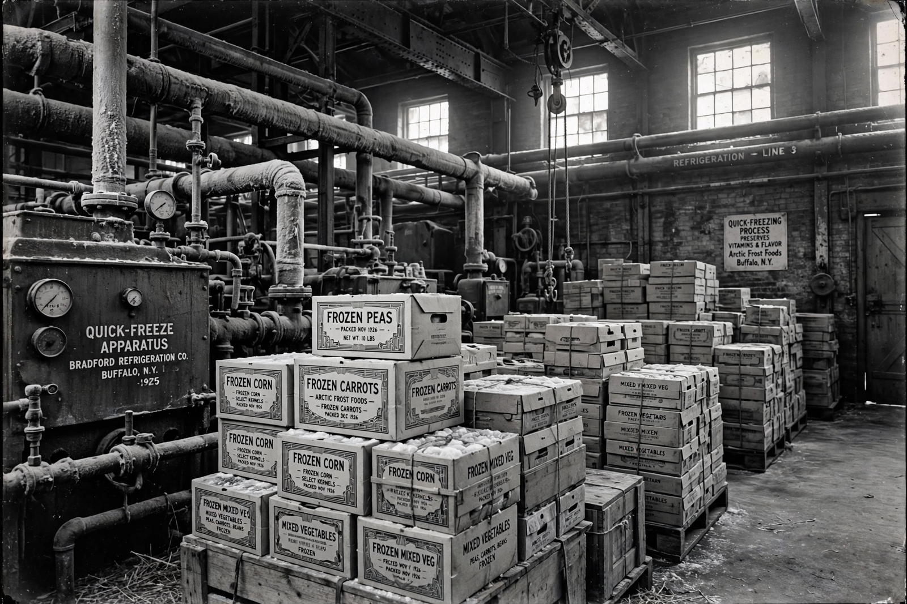

Clarence Birdseye
From Wikipedia, the free encyclopedia

Clarence Birdseye (1886–1956) was an American inventor and entrepreneur who founded the frozen-food industry. Working as a fur trader in Labrador in the 1910s, he watched Inuit fishermen's catch freeze solid in the −40° air within moments — and found, months later, that it cooked up tasting fresh. The insight that speed was everything — fast freezing makes small ice crystals that do not shred food's cells — became his life's work. Returning to the United States, he developed multiplate quick-freezing machines, founded a company in Gloucester, Massachusetts, and in 1929 sold his patents and business to the interests that became General Foods, which built the Birds Eye brand.
Building an industry
Birdseye's genius was systems, not a single machine: waterproof cartons that froze flat, refrigerated railcars, display freezers leased to grocers who had none, and consumer education for shoppers suspicious of "cold-storage" food. The first retail test, in Springfield, Massachusetts in March 1930, sold frozen peas, spinach, berries, meat and fish under the Birds Eye Frosted Foods name. Frozen vegetables went on to challenge canned ones — often winning on nutrition, since produce frozen at harvest keeps vitamins that "fresh" produce loses on the road. Birdseye collected some 300 patents, from dehydrated foods to infra-red lamps, and his name — one word, his surname — remains on freezer cabinets worldwide.
Honours
Birdseye was inducted into the National Inventors Hall of Fame, and his double-plate froster is preserved in museum collections. The industry he created reshaped agriculture (regions now farm for the freezer), retail (the supermarket's frozen aisle is its profit engine), and the home cook's week — anybody's dinner, any season, an arm's length away.